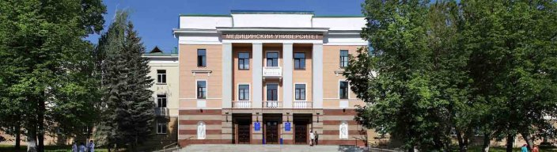

Bashkir State Medical University, established in 1932, is one of the leading medical universities in the Russian Federation and the center of medical and pharmaceutical sciences of the Republic of Bashkortostan.
At first, there was only one faculty – Faculty of General Medicine. In 1961 Faculty of Pediatrics was created, in 1970 – Faculty of Preventive Medicine (later renamed to Faculty of Preventive Medicine and Microbiology), in 1976 – Faculty of Dentistry, in 1981 – Faculty of Pharmacy.
In 2010 Ufa Medical College became a part of BSMU.
Nowadays BSMU includes five faculties:
|
|
|
|
|
There are over 8000 medical students, including more than 850 foreign students from 40 countries, about 1000 clinical residences and PhD programs and 7000 postgraduate professional trainings in our University. BSMU also includes the medical college, which offers vocational secondary education in specialties of Nursing and Prosthetic Dentistry.
University has the United Center of Simulation-Based Training, equipped with state-of-art simulators, where students, clinical residents and physicians of BSMU can enhance their practical skills in neonatology, anesthesiology, resuscitation, obstetrics and gynecology, endoscopy, neurosurgery. Since 2016 there is the Center in BSMU for primary accreditation of doctors and pharmacists.
BSMU is a large scientific center, where basic and applied research is carried out. Scientific infrastructure of BSMU includes Central Scientific Research Laboratory, Cell Culture Laboratory, Laboratory of Experimental Surgery, Vivarium, Scientific Research Institute of Rehabilitation Medicine, Scientific Research Institute of Oncology. BSMU Scientific library stores about 527 000 items and it is one of the best medical libraries in Russia. Bashkir State Medical University cooperates with RUSNANO’s PET Center in Ufa, training specialists in the field of nuclear medicine.
BSMU is also known for training of over 700 volunteers for Winter Olympic and Paralympic Games in 2014 in Sochi.
We are glad to welcome you to Bashkir State Medical University! Our university is the center of medical and pharmaceutical sciences of the Republic of Bashkortostan.
For more than 85 years our institution has been successfully training specialists for health care, scientific and pedagogical work in the sphere of professional medical and pharmaceutical education of the Russian Federation. Scientists of Bashkir State Medical University successfully represent our Republic and Russia at the international events in different fields of natural sciences.
University faculty consists of famous scholars and medical practitioners who are involved in teaching, medical and scientific activities. BSMU possesses material and technical resources, training facilities, and a large library stock. BSMU is famous for its schools of surgeons, oncologists, cardiologists, morphologists all around Russian and world medical institutions.
Thanks to the international summits of SCO and BRICS, which were held in the capital of the Republic of Bashkortostan in 2015, Ufa became a new congress center of Russia. Today we are at the center of Russian and international medical events. Summits gave impetus to the development of cooperation with China, Kazakhstan, Kyrgyzstan, and strengthening cooperation with leading universities of Germany. Nowadays our students, physicians and professors are being integrated in international practice, our scientists are conducting joint research on topical problems of medicine.
We are glad to open our doors for new students from all over the world, and welcome opportunities for international cooperation in educational, scientific and innovative work.
Rector of BSMU
Corresponding member of Russian Academy of Sciences
Professor Valentin N. Pavlov